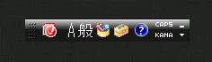

WinのIMEパネル表示させたくないのでいつも消しているが、
MacからRemoteDesktop使っている時に英数/かなの切り替えがキーボード操作で出来なくて、
このパネルが必要になって困る。

常時これは絶対に表示したくないし、なんとか環境に依存しない方法で解決したい。
(IMEの設定いじったり、キーマップを変えたりするのはPC環境が変わった場合に面倒なのでやらない)
結果、完全解決出来なかったので、着地点を設定変更までの手数を減らすということにした。
通常
- コンパネを開く
- コンパネから地域と言語を開く
- 地域と言語からキーボードと言語タブを開く
- キーボードの変更ボタンを押す
- テキストサービスと入力言語ウィンドウを開く
- 言語バータブを開く
- 言語バー設定の変更
手数が多すぎてやばい
アイディア
上記 1. 2. 3. 4. をショートカットするコマンド
$ control input.dll
コントロールパネル内の設定ウィンドウを直接開く。
.bat作って設定ウィンドウopenまでショートカットする。
入力を切り替えたい時に初めてパネル表示させて、要件終わったら非表示にする。
あと２クリックをショートカットできたら、、、、、、、、、、、、、、